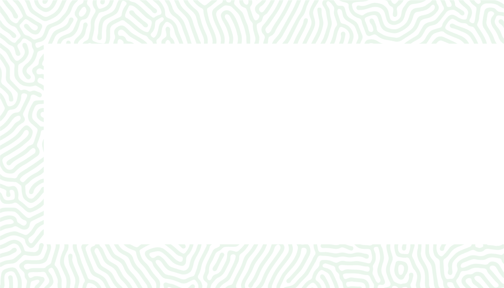
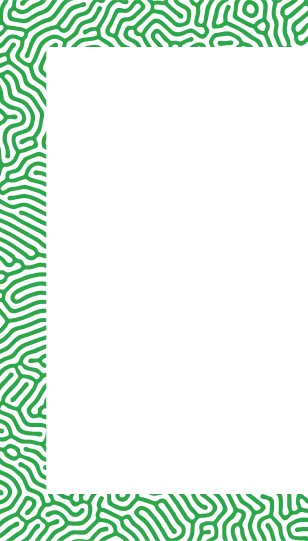

Semesta ku jatuh
hati padamu.

Tentang Kami
Greenpeace hadir karena bumi yang rapuh ini perlu suara. Butuh solusi. Butuh perubahan. Butuh aksi.
Di seluruh dunia, kita berdiri bersama-sama dengan masyarakat, menuntut pertanggung jawaban berbagai pemerintahan dan perusahaan untuk bertanggung jawab. Mulai dari jalanan hingga ke tempat para pengambil keputusan, kita mempunyai kekuatan nyata jika kita bekerja sama.


Artikel Kami
Baca tentang beberapa kemenangan, tragedi, dan momen penting lainnya dari Greenpeace 50 tahun terakhir.
Menjadi Aktivis Digital
Perkembangan zaman semakin dinamis, teknologi informasi salah satu yang paling cepat berubah. Saat ini untuk menyuaraan isu-isu perlindungan lingkungan tidak hanya melalui kegiatan konvensional saja. Jadilah bagian dari aktivis digital untuk mengatakan isu perlindungan lingkungan. Apa sih yang bisa kita lakukan di dunia.


1
Ikuti Sosial Media
Ikuti sosial media Greenpeace Indonesia untuk mendapatkan informasi terbaru terkait kampanye perlindungan lingkungan yang Greenpeace lakukan, dan jangan lupa tap dua kali di post instagram, like status kami di facebook, retweet cuitan kami, dan subcribe channel youtube kami.
2
Pelajari Isunya
Karena pengetahuan adalah kunci dan melindungi Bumi dengan itu kita semua bisa untuk melihat apa saja akar masalahnya dan siapa saja yang bertanggung jawab atasnya. Karena itu mari bersama pelajari isunya, supaya kita dapat melindungi Bumi ini dengan lebih tepat dan efektif.
3
Bagikan Kampenyenya
Kamu mungkin tahu apa yang terjadi dengan lingkungan Bumi kita, tapi jangan simpan pengetahuan ini sendirian, bagikan kepada teman, pacar, hingga keluargamu, agar mereka juga tahu dan ikut ambil bagian untuk menyelamatkan Bumi. Karena, kita tinggal di Bumi yang sama.
4
Ciptakan Aksimu
Mulai dari melayangkan surat kepada perusahaan, menanam pohon, melakukan efisiensi energi atau mengingatkan orang-orang dengan cara yang kreatif melalui sosial mediamu, adalah salah satu dari banyak aksi yang bisa kamu lakukan untuk ikut ambil bagian dalam menyelamatkan Bumi kita.